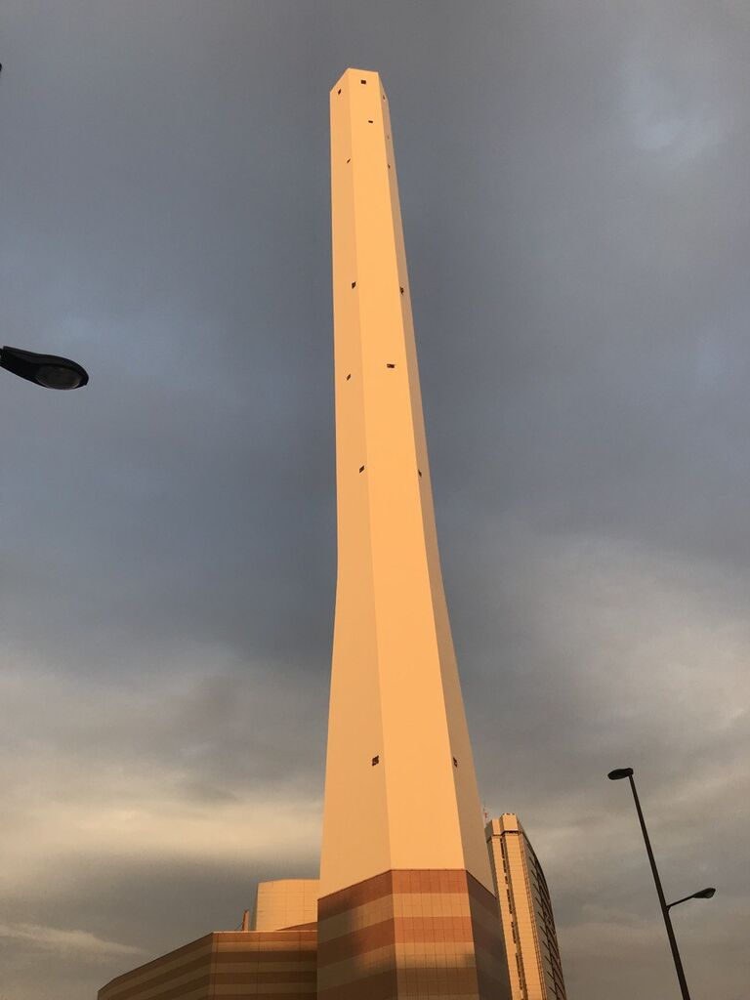
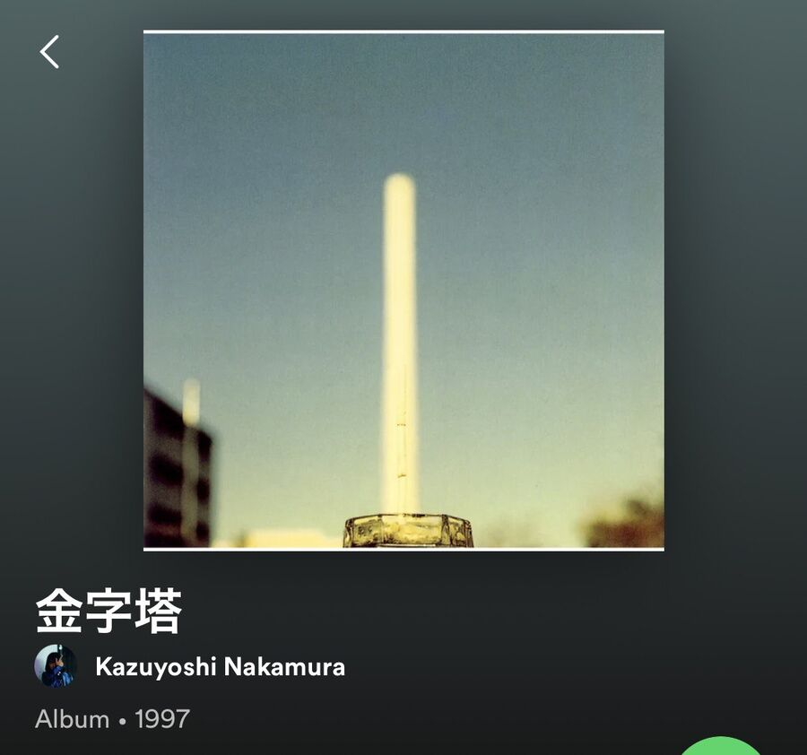
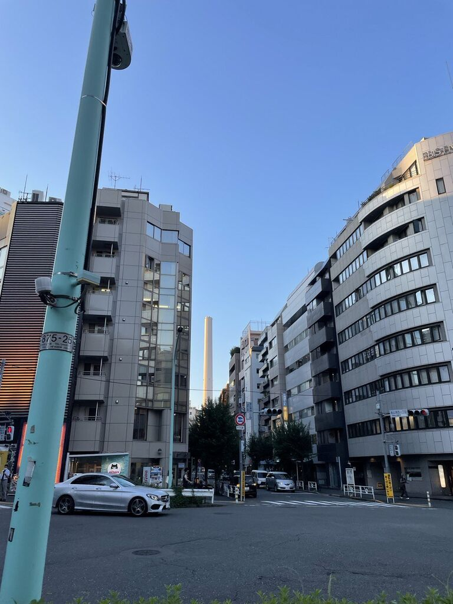
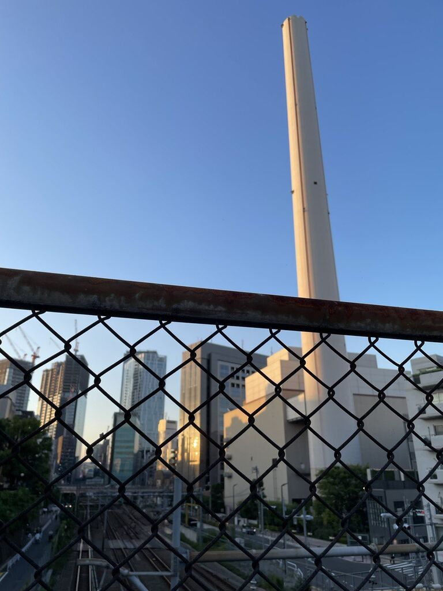
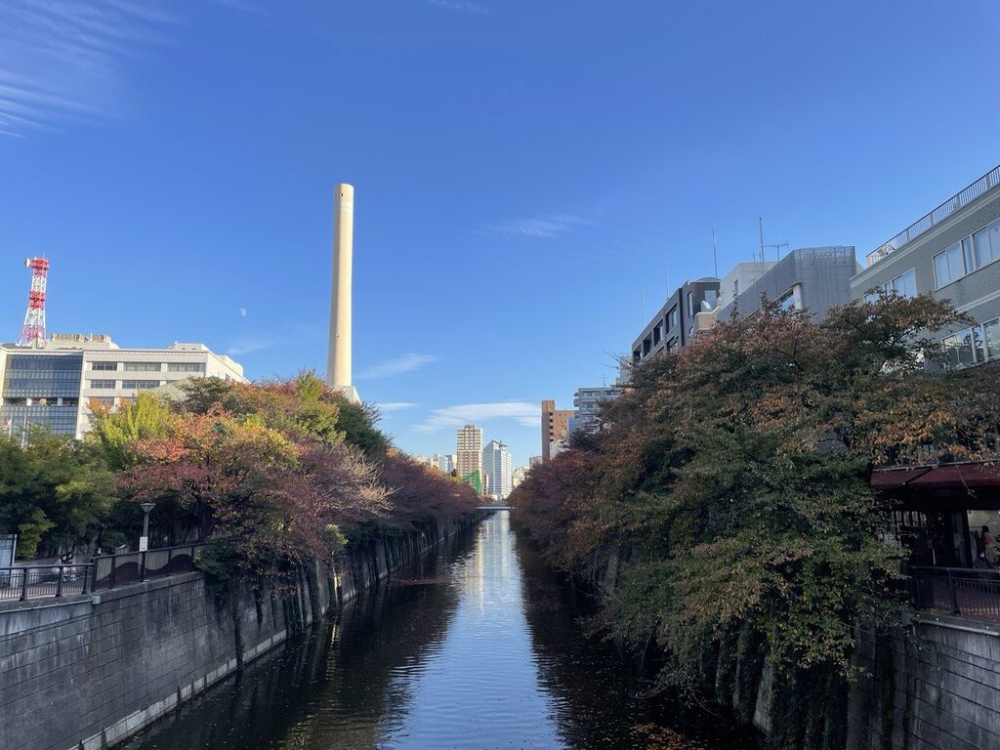

东京 塔
几年前我路过池袋的时候，就惊讶于这么一座不明所以的白色的塔，应该有个名字吧。但我一直没有特别去查，因为位于池袋北口（也就是现在的池袋西口北），我一直在心里称之为「池袋北塔」： 
后来我在spotify上看到了这么一张专辑推荐，封面的塔和我认识的池袋北塔非常相似，我心想这应该就是池袋北塔吧，说不定是什么有名的地标： 
最近散步走到惠比寿和涩谷交界的地方的时候，也看到了类似的塔。一开始远远看过去，我心想这不会是池袋塔吧，但方位上来说又不是： 
我决定查一下地图，地图上对此的标识是「渋谷清掃工場」。我心想不会吧，在我心中留下如此憧憬的东西居然是一个垃圾清扫工厂，直到我走到塔下确认了铁栅栏外面的铭牌才确定，这就是垃圾处理工厂： 
家附近也能看到一座这样的塔，我之前以为就是上图的涩谷垃圾工厂，没想到是目黑垃圾工厂： 
刚刚Spotify又给我推送了上面那张专辑，于是我搜索了一番，果然也是垃圾处理工厂，根据描述，这座江户垃圾处理工厂由于改建已经在前年解体，新的塔要在令和九年才能完成：
中村一義の金字塔のジャケットでおなじみの江戸川清掃工場の煙突が建替工事のため解体されるそうでとてもショックを受けてます。。最近煙突が見える場所に引っ越してきたばっかなのに😭
— 光亮 (@kosuke11momo) January 22, 2021
新しい煙突(工場)の完成は6年後だそうです。https://t.co/qwl8UgArfh pic.twitter.com/wABRsX1eNc
If you like my article and want to donate, click the 捐赠 Donation button on the sidebar.